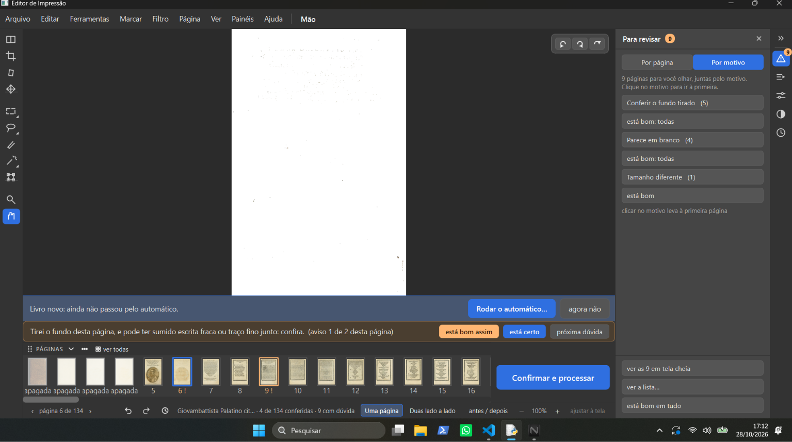
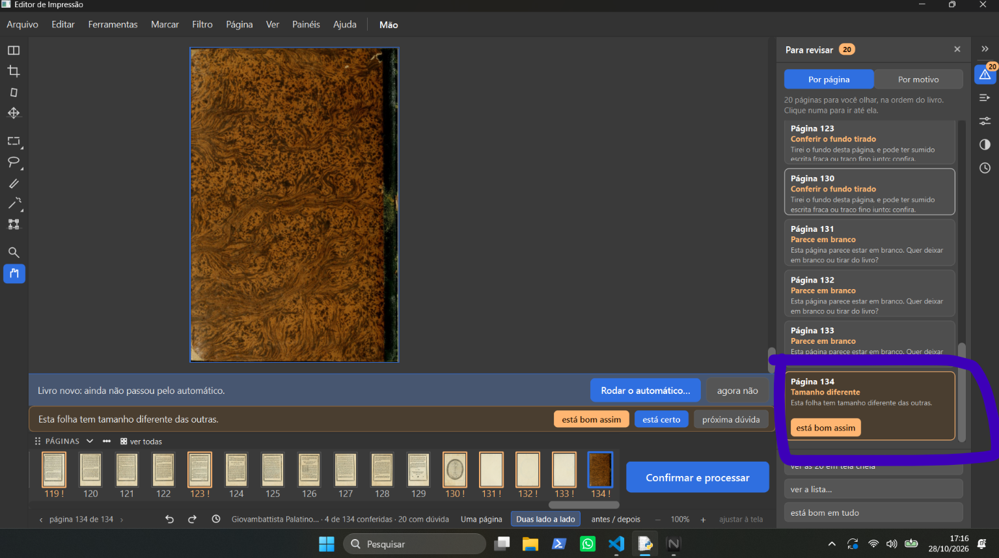
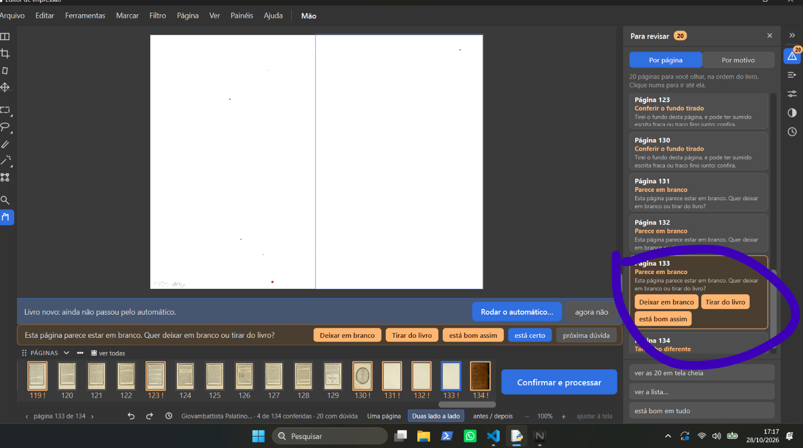
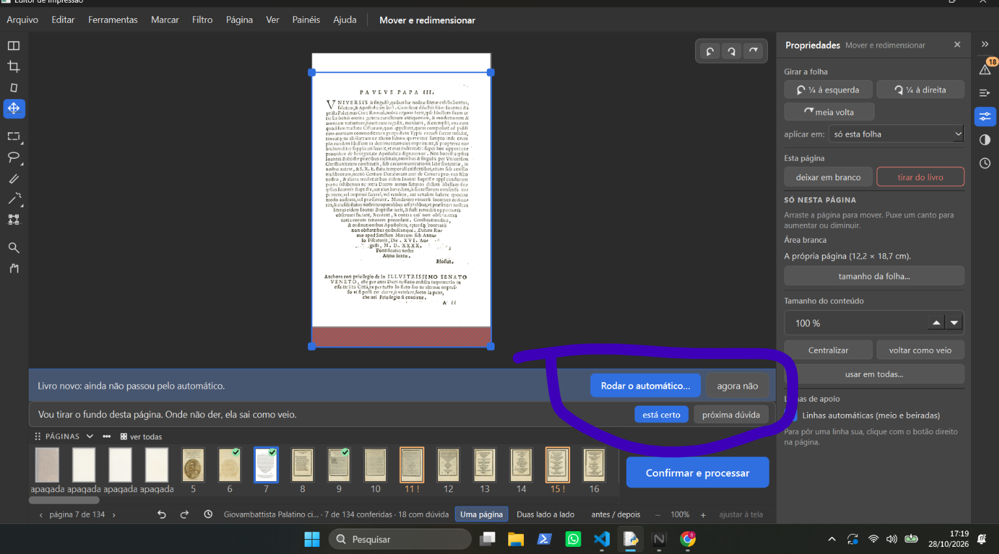
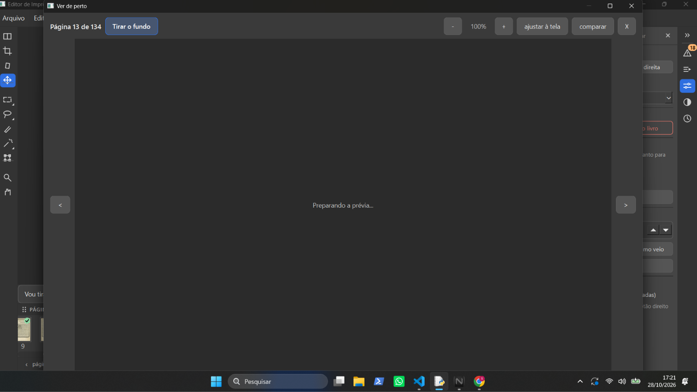
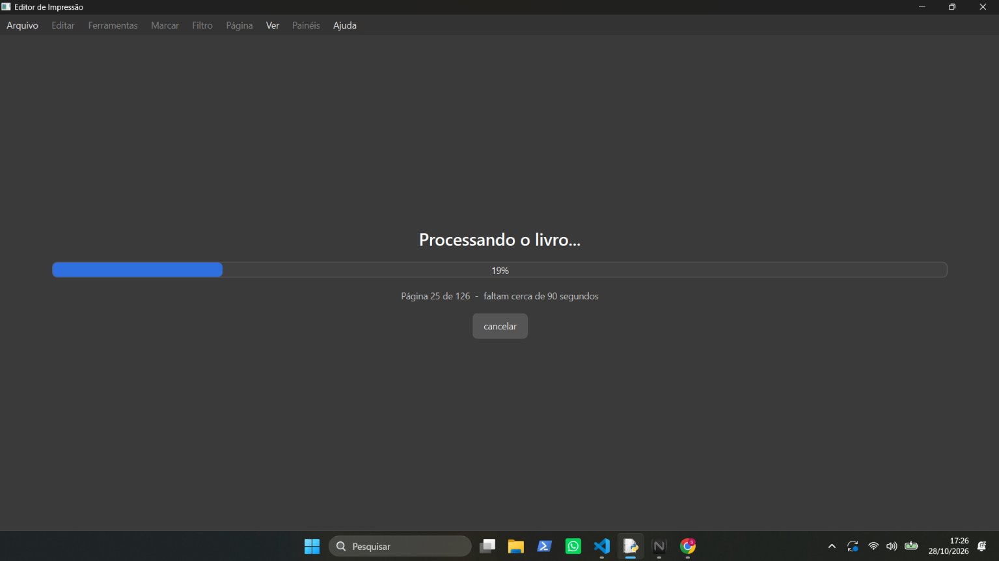
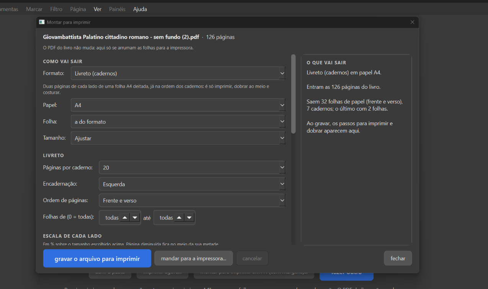
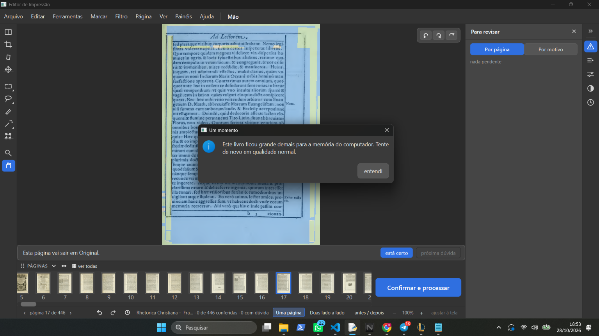

Programa: atalho "Editor de Impressao (rodada de consertos)" → worktree .claude\worktrees\obra-juncao, ramo
obra-2026-10-26 (fc38afd), dados de teste em D:\programas\EditorImpressao-arquivos\dados-teste-rodada-de-consertos.
Tipos: erro (faz errado ou não faz nada) · confuso (faz, mas não dá para entender) · falta · a conferir.
| # | O que ele escreveu | Tipo | O que a gerente achou (só leitura, nada mudado) | |
|---|---|---|---|---|
| 2-1 | "eu cheguei a abrir o aplicativo, mas ele está bem travado" | — | erro (a conferir) | Livro aberto de manhã: Cursus philosophicus. Tomo 2 (402 páginas). Pelo acoes.jsonl: aberto ~10:32, primeira ação 10:36, Mover na página 1 (10:36), Marcação na página 1 (10:37–10:38), fechado 10:44. A página 1 tem 302 marcações de letra feitas pelo programa; cada mexida na Marcação grava as 302 de novo (antes + depois, 140 a 565 mil caracteres por ação; ação comum ~500). Suspeita, não provada: a Marcação pesa a cada clique. Também no PC: League of Legends aberto desde 27/10 22:16 (1,6 GB de memória), só 2 GB livres de 16. Perguntado a ele onde travou mais (abrir / passar páginas / Marcação ou Mover / travou tudo); sem resposta ainda. |
| 2-2 | "quando eu clico em tirar do livro a pagina fica como apagada, mas não é tirada do pc" |  |
a conferir | Print: Palatino, página 6 de 134; as 4 primeiras miniaturas com "apagada". O que o programa faz hoje: "Tirar do livro" marca a página como tirada; ela continua na tira de miniaturas com a palavra "apagada" (para poder "trazer de volta") e não vai para o PDF final (ui/tela_conferir.py apagar_pagina; core/avisos.py). O arquivo do PDF de entrada no computador nunca é mexido. Decidido (D-046, 07/10): "Tirar do livro" = "o que não é página do livro sai de vez". Nada decidido sobre a página sumir da tira na tela. Perguntado a ele o que esperava (sumir da tira? sair do PDF? apagar do PDF de entrada?). |
| 2-3 | "está pedindo para conferir o fundo tirado, mas onde eu vejo se o fundo foi tirado? em qual botão eu olho o fundo tirado anteriormente." (círculo dele no cartão "Página 6 — Conferir o fundo tirado · Parece em branco", que só tem "está bom assim") | print só no chat, sem arquivo para copiar (Palatino, página 6 de 134, "Para revisar" 10, aba "Por página") | confuso | O aviso (core/analise.py CONFERIR_FUNDO_TIRADO) só tem "está bom assim"; nada no cartão diz onde comparar. O jeito que existe: botão "antes / depois" na barra de baixo (ao lado de "Duas lado a lado"): Original à esquerda da linha, como vai sair à direita, linha que se arrasta (ui/tela_conferir.py, etapa 6, D-184). Respondido a ele no chat. No mesmo print: a faixa diz "Livro novo: ainda não passou pelo automático", mas já há avisos de "fundo tirado" (a conferir). |
| 2-4 | "ele só da a opção está bom assim" (círculo dele no cartão "Página 134 — Tamanho diferente", a contracapa marmorizada, Palatino) | print só no chat, sem arquivo para copiar (página 134 de 134, "Para revisar" 11) | confuso / falta (a conferir) | Os avisos "Conferir o fundo tirado" e "Tamanho diferente" foram feitos com um botão só, "está bom assim" (core/analise.py, CONFERIR_FUNDO_TIRADO e TAMANHO_DIFERENTE). Livro de decisões: nada decidido sobre outros botões nesses dois avisos (regra 7: não inventar). Vira pergunta a ele: o que cada um deve oferecer. |
| 2-5 | "Outra pergunta, quando eu excluo paginas, isso altera em alguma coisa na ordem certa do livro, no caso excluir a capa e contra capa, folhas que não importam do começo e do fim." | — | pergunta (respondida) | Código: as tiradas só são puladas (core/avisos.py _paginas_vivas_por_folha); as que ficam seguem na mesma ordem e os cadernos são montados com elas (core/cadernos.py), completando com branco só no fim do último caderno. Ponto de atenção explicado a ele: tirar número ímpar de páginas antes do texto troca o lado (direita/esquerda) de todas as seguintes; tirar número par (como as 4 do começo do Palatino) não troca. Nada no Livro sobre avisar isso. |
| 2-6 | "nessa pagina que é capa não aparece nenhum botão para deixar em branco. só aparece em outras paginas, eu devia conseguir fazer isso em qualquer pagina, anote todas as fotos e guarde todos os prints que eu mandar, pois são apontamentos sobre o aplicativo" (círculos dele: cartão da página 134, "Tamanho diferente", só "está bom assim"; cartão da página 133, "Parece em branco", com "Deixar em branco", "Tirar do livro" e "está bom assim") |   |
confuso (escondido) | Decidido, D-046 (07/10 e 09/10): "Deixar em branco" e "Tirar do livro" em qualquer página ("Essa opção de tirar do livro ou deixar folha em branco eu quero ter em outras paginas"). Existe na rodada de consertos (etapa 2), mas fora da vista: bloco "Esta página" no alto do painel Propriedades (ícone dos controles deslizantes, à direita), com os dois botões em toda página (ui/tela_conferir.py "Esta página"; ui/widgets/paineis.py); também tecla Delete (deixar em branco), Shift+Del (tirar do livro, D-561) e menu Página. No cartão do "Para revisar" e na faixa de baixo, os dois botões só aparecem nos avisos de página em branco/sem conteúdo (D-269, D-271). Ele não achou: o lugar não aparece onde ele está olhando. Dois prints anteriores dele desta sessão (2-3 e 2-4, 17:13 e 17:14) chegaram só no chat, sem arquivo: pedido a ele para mandar de novo. |
| 2-7 | "eu cliquei está certo mas o livro continua com o aviso naquela folha, não devia ter mais aviso se eu apertei está certo" (círculo dele na faixa de baixo: "Vou tirar o fundo desta página. Onde não der, ela sai como veio." com "está certo" e "próxima dúvida"; Palatino, página 7, ferramenta Mover e redimensionar) |  |
confuso | O "está certo" funcionou: tique verde na miniatura 7, rodapé "7 de 134 conferidas", "Para revisar" de 20 para 18. A frase que ficou não é aviso: é a frase "tranquila" que a faixa mostra quando a página não tem aviso (ui/tela_conferir.py _texto_tranquilo, filtro Tirar o fundo), com os botões "está certo" / "próxima dúvida" que ficam sempre ali. Como a frase fala de "tirar o fundo" (o mesmo assunto do aviso "Conferir o fundo tirado"), parece que o aviso continua. Correção dele (a gerente leu errado): "você está vendo errado , o está certo deixou o tique verde mas continuou com o aviso na pagina, dá para ver que a opção esta certo continua aparecendo, deveria sumir quando eu aperto está certo." (print da página 13, 17:23, círculos na miniatura 13 com tique e na faixa com "está certo" / "próxima dúvida"; só no chat, sem arquivo). Virou D-572 no Livro de decisões: depois de "está certo", a faixa não mostra mais aviso nem o botão "está certo"; o que ela mostra no lugar fica como pergunta. |
| 2-8 | "demora muito para carregar a pagina na visão de imagem grande." (janela "Ver de perto", página 13 de 134, "Tirar o fundo", só "Preparando a prévia...") |  |
erro (lentidão, a conferir) | Medido fora da tela, na mesma página e nos mesmos ajustes (cópia, nada gravado): 1,1 s a 220 DPI (o tamanho do "Ver de perto", ui/tela_ampliada.py DPI_AMPLIADA), 1 a 2 s a 300 DPI (o PDF). A conta da imagem não explica a demora: a suspeita é a fila de prévias do programa (2 de cada vez, ui/tarefas.py), com pré-carregamento e medidas do tamanho do PDF na frente. Programa aberto: 1,7 GB de memória, 808 s de processador em ~25 min. Para provar, a gerente vai olhar o programa por dentro (py-spy, numa pasta temporária, sem mexer no programa) enquanto ele abre o "Ver de perto" de novo. Primeira medição (17:23–17:26): o "Ver de perto" não foi aberto nesses 3 minutos; o programa estava em "Confirmar e processar" (5 páginas ao mesmo tempo; muito tempo em core/detectar_regioes.achar). Medir de novo quando ele disser "pode medir". |
| 2-9 | "quero poder colocar varios livros para processar, no caso eu fazer toda a restauração, salvar e depois lá na area de trabalho do aplicativo, a home, que não tem botão para voltar para ela hoje, eu escolho todos os livros que eu quiser e mando para fazer o processamento em massa." (print: "Processando o livro...", 19%, página 25 de 126, "faltam cerca de 90 segundos") |  |
pedido novo + falta | Processar vários livros de uma vez: não existe e não estava no Livro: virou D-573 (quando entra: perguntar). Voltar para a tela dos livros: existe só no menu Arquivo > "Voltar para os livros" (ui/barra_de_menu.py); na área de trabalho não há botão à vista (o "Voltar para os livros" com Esc é do livro aberto da tela inicial, D-340). Perguntado se ele quer um botão à vista. |
| 2-10 | "eu deveria conseguir ver o livreto pronto aqui nessa tela para que eu possa ver se ficou certo, quero tres opções, e eu queria conseguir na hora de processa o livro já poder transformar ele em livreto." (print: "Montar para imprimir", Palatino "sem fundo (2).pdf", 126 páginas, Livreto A4, 20 por caderno; à direita só o texto "O que vai sair": 32 folhas, 7 cadernos) |  |
falta + pedido novo | A janela não mostra imagem nenhuma do livreto (ui/dialogo_impressao.py). Viraram D-574 (ver o livreto pronto na janela; três opções apresentadas no chat) e D-575 (sair em livreto já ao processar; não contradiz a D-314, perguntar como fica depois). |
| 2-11 | "eu queria poder nessa etapa do automatico poder ver como iria ficar conforme as opções que eu fosse escolhendo." (print: janela "Automático", livro Rhetorica Christiana, 446 páginas; etapa 4 "Limpar a folha" aberta em Preto e branco; à direita "O livro, como está agora", folha 6 de 446, ainda amarelada) | print só no chat, sem arquivo (mandado enquanto a gerente trabalhava) | pedido | Só anotado. A imagem da direita mostra o livro como está, não como vai ficar com as opções escolhidas. Liga-se à D-070 ("Laboratório" no Automático em tela cheia, 21/10: "poderemos passar as paginas e ir adicionando filtro e coisas e vendo como a pagina"), que está na Lista de espera. |
| 2-12 | "mais um erro" (print: Rhetorica Christiana, 446 páginas, página 17 com a área azul por cima; janela "Um momento": "Este livro ficou grande demais para a memória do computador. Tente de novo em qualidade normal.") |  |
erro | Só anotado. erros.log (dados de teste): dois "processar" falharam por falta de memória, 18:27:30 (OpenCV não conseguiu 3,6 MB, ao endireitar) e 18:40:46 (numpy não conseguiu 18,1 MB, ao pôr as margens, core/margens_scantailor.compor_com_margens). Pedaços pequenos: faltou memória no computador inteiro, não "o livro grande demais" como a frase diz. Nessa hora estavam abertos o League of Legends, o Chrome, o próprio Editor (1,2 GB) e, a partir de ~18:45, os agentes da gerente rodando testes e prints (vários GB): a gerente pode ter contribuído. A frase do aviso (ui/tarefas.py) culpa o livro. Pergunta dele depois: "porque os testes não pegaram esse erro? de não processar o arquivo." Resposta (gerente, do código e dos testes): (1) nenhum teste processa um livro grande inteiro (446 páginas) com o PC ocupado; os testes usam poucas páginas, numa máquina calma (o GitHub e a suíte do PC rodada sem agentes); (2) o programa decide no começo quantas páginas faz ao mesmo tempo (até 16, pelos 16 núcleos, com 900 MB por página e 1,5 GB de reserva, core/nucleos.quantos_trabalhadores) pela memória livre daquela hora; se a memória cai no meio, ele não diminui nem tenta de novo, para; nenhum teste simula a memória acabando no meio (o único teste de pouca memória, test_mesma_imagem_com_pouca_memoria.py, é do detector de figuras); (3) nenhum teste confere se a frase do aviso diz a causa certa. Os agentes da gerente rodavam desde ~18:25: as duas falhas (18:27 e 18:40) foram com eles rodando. |
Editor de Impressão · gerado em 28/10/2026 às 19:24